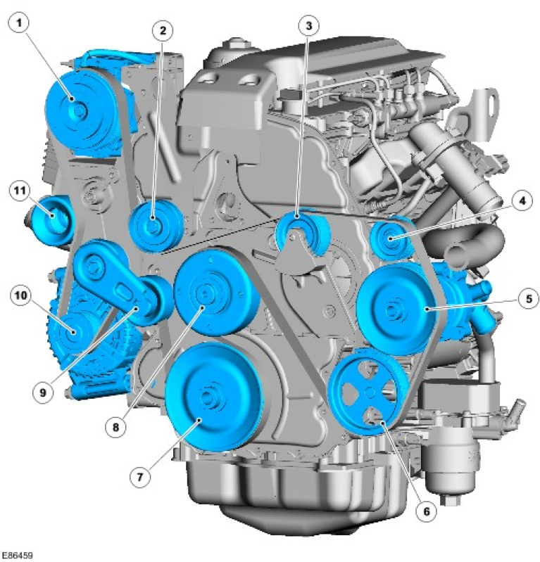
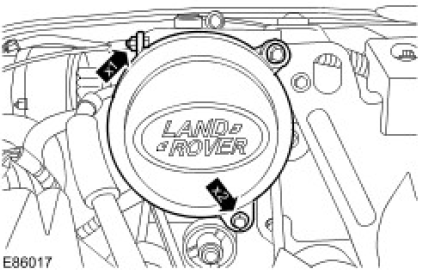
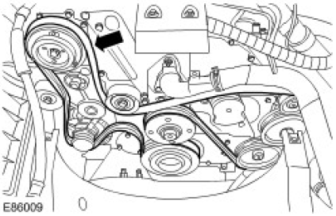
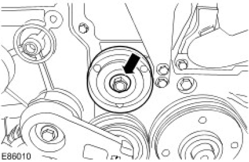
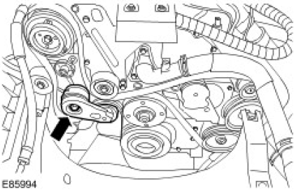
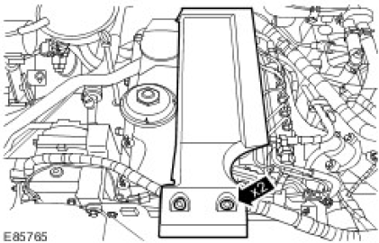
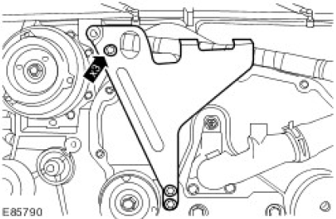
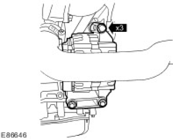
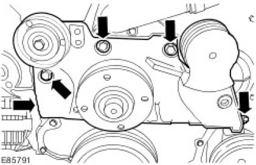

Published: Feb 1, 2007
Specifications
Torque Specifications
| Item | Nm | lb-ft |
|---|---|---|
| Accessory drive component bracket bolts | 48 | 35 |
| Engine lifting bracket bolts | 10 | 7 |
| Accessory drive belt tensioner bolt | 25 | 18 |
| Accessory drive belt idler pulley bolt | 48 | 35 |
Accessory Drive
COMPONENT LOCATION

| Item | Part Number | Description |
|---|---|---|
| 1 | Air conditioning compressor | |
| 2 | Deflection pulley | |
| 3 | Deflection pulley | |
| 4 | Vacuum pump | |
| 5 | Coolant pump | |
| 6 | Power steering pump | |
| 7 | Crankshaft pulley | |
| 8 | Engine cooling fan pulley | |
| 9 | Automatic tensioner | |
| 10 | Generator | |
| 11 | Deflection pulley |
OVERVIEW
The engine crankshaft pulley drives the accessory components, which comprise the torsional vibration damper, generator, power steering pump, A/C compressor, vacuum pump and coolant pump, via the accessory drive belt.
The belt, which is maintenance free poly-V type belts, are automatically pre-loaded by the automatic tensioner and are routed over deflection pulleys in order to maintain sufficient adhesion about the drive wheels. This ensures slip- free drive of the accessory components.
Accessory Drive
Overview
For information on the description and operation of the system:
Accessory Drive
Inspection and Verification
- Verify the customer concern.
- Visually inspect for obvious mechanical faults.
| Mechanical | Electrical |
|---|---|
|
- If an obvious cause for an observed or reported concern is found, correct the cause (if possible) before proceeding to the next step.
 CAUTION: If the engine is run without the accessory drive belts connected to eliminate driven
components, diagnostic trouble codes, (DTCs) may be set which must be cleared before the vehicle is
returned to the owner. The engine should not be run for more than 2-3 minutes with the belts disconnected.
Failure to follow this instruction may result in personal injury.
CAUTION: If the engine is run without the accessory drive belts connected to eliminate driven
components, diagnostic trouble codes, (DTCs) may be set which must be cleared before the vehicle is
returned to the owner. The engine should not be run for more than 2-3 minutes with the belts disconnected.
Failure to follow this instruction may result in personal injury.
- Use the approved diagnostic system or a scan tool to retrieve any DTCs before moving onto the symptom chart or DTC index.
Make sure that all DTCs are cleared following rectification.
Make sure that all DTCs are cleared following rectification.
Symptom Chart (Accessory Drive Belt)
| Symptom | Possible cause | Action |
|---|---|---|
| Noise |
|
Check the belt condition (see visual inspection). Check the tensioner function. Check the pulley alignment. Check the driven components for excessive resistance to rotation. Rectify as necessary. |
| Drive belt does not hold tension |
|
Check the belt condition (see visual inspection). Check the tensioner function. Rectify as necessary. |
DTC Index
Generic scan tools may not read the codes listed, or may read only 5-digit codes. Match the 5 digits from the scan tool to the first 5 digits of the 7-digit code listed to identify the fault (the last 2 digits give extra information read by the manufacturer-approved diagnostic system).
Electronic Engine Controls
| DTC | Description | Possible causes | Action |
|---|---|---|---|
| P062300 | Generator lamp control circuit |
|
Check the charging voltage. Install a new
accessory drive belt if necessary. Accessory Drive Belt (86.10.03) Check the charging system circuits. Check the generator lamp control circuit. Refer to the electrical guides. Install a new generator if necessary. Generator (86.10.02) Clear the DTCs and test for normal operation. |
Published: Jan 5, 2007
Accessory Drive Belt (86.10.03)
Removal
- Disconnect the battery ground cable.
For additional information, refer to Battery Disconnect and Connect - Remove the accessory drive belt tensioner.
For additional information, refer to Accessory Drive Belt Tensioner (86.10.06) - Remove the air conditioning (A/C) compressor pulley cover.
- Remove the nut.
- Remove the 2 bolts.

A/C compressor pulley cover removal (E86017) - Remove the accessory drive belt.

Installation
- To install, reverse the removal procedure.
- Clean and inspect the drive pulleys for damage.
- Connect the battery ground cable.
For additional information, refer to Battery Connect
Published: Jan 4, 2007
Accessory Drive Belt Idler Pulley (86.10.23)
Removal
- Disconnect the battery ground cable.
For additional information, refer to Battery Disconnect and Connect - Remove the cooling fan.
For additional information, refer to Cooling Fan (26.25.19) - Release the tension from the accessory drive belt.
- Rotate the accessory drive belt tensioner clockwise.
 Accessory drive belt tensioner release (E85993)
Accessory drive belt tensioner release (E85993) - Remove the accessory drive belt idler pulley.

Installation
- To install, reverse the removal procedure.
- Clean the component mating faces.
- Tighten the bolt to 48 Nm (35 lb.ft).
Accessory drive belt idler pulley installation (E86010)
- Connect the battery ground cable.
For additional information, refer to Battery Connect
Published: Jan 4, 2007
Accessory Drive Belt Tensioner (86.10.06)
Removal
- Disconnect the battery ground cable.
For additional information, refer to Battery Disconnect and Connect - Remove the cooling fan.
For additional information, refer to Cooling Fan (26.25.19) - Release the tension from the accessory drive belt.
- Rotate the accessory drive belt tensioner clockwise.
Accessory drive belt tensioner release (E85993) - Remove the accessory drive belt tensioner.
- Remove the bolt.

Accessory drive belt tensioner removal (E85994)
Installation
- To install, reverse the removal procedure.
- Clean the component mating faces.
- Tighten the bolt to 25 Nm (18 lb.ft).
- Connect the battery ground cable.
For additional information, refer to Battery Connect
Published: Feb 25, 2008
Accessory Drive Component Bracket
Removal
- Disconnect the battery ground cable.
For additional information, refer to Battery Disconnect and Connect - Remove the accessory drive belt.
For additional information, refer to Accessory Drive Belt (86.10.03) - Remove the engine cover
- Remove the 2 bolts

Engine cover bolts (E85765) - Remove the engine lifting bracket.
- Remove the 3 bolts.

Engine lifting bracket bolts (E85790) -
NOTE: The generator upper bolt can only be removed when the generator has been released from the accessory drive component bracket.
Release the generator.
- Remove the 3 bolts.

Generator bolts (E86646)
- Remove the accessory drive component bracket.
- Remove the 5 bolts.

Accessory drive component bracket bolts (E85791)
Installation
- Install the accessory drive component bracket.
- Tighten the 5 bolts to 48 Nm (35 lb.ft).
Accessory drive component bracket installation (E85791) -
NOTE: The generator upper bolt must be installed before the generator is installed to the accessory drive component bracket.
Install the generator.
- Tighten the 3 bolts to 48 Nm (35 lb.ft).
Generator installation (E86646) - Install the engine lifting bracket.
- Tighten the 3 bolts to 10 Nm (7 lb.ft).
- Install the engine cover.
- Install the accessory drive belt.
For additional information, refer to Accessory Drive Belt (86.10.03) - Connect the battery ground cable.
For additional information, refer to Battery Connect